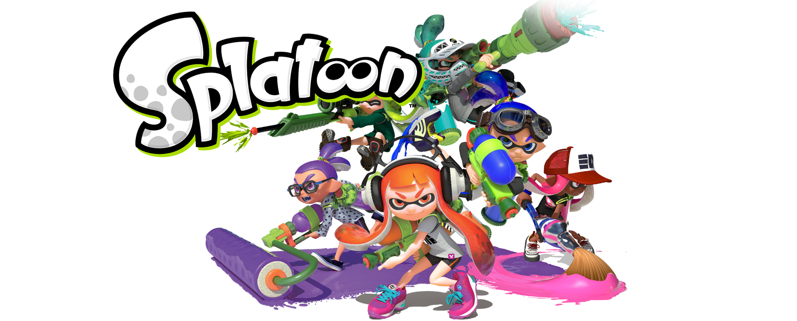

Splatoon
Es un videojuego de género shooter en tercera persona desarrollado y publicado por Nintendo para Wii U en el año 2015. Es un acrónimo de Splat (una onomatopeya inglesa equivalente a un disparo) y Platoon (que en inglés significa pelotón, pandilla). Su jugabilidad se centra en la guerra entre inklings, utilizando tinta como arma para cubrir la mayoría del territorio. Al finalizar cada partida, un gato árbitro decide al ganador.